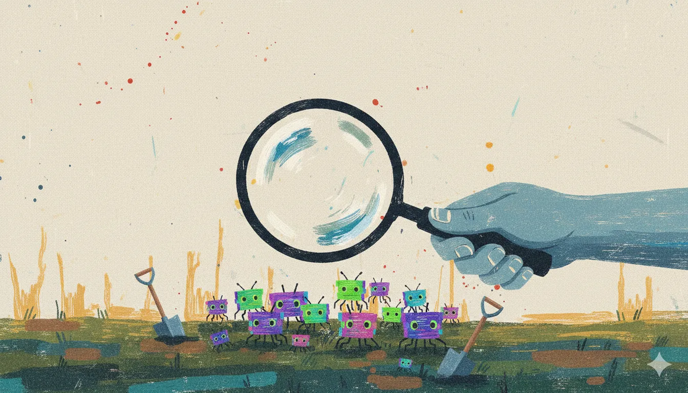

 Image made by Gemini
AI agents are under attack this week—and AI is doing the attacking. Claude Opus 4.6 found 500+ vulnerabilities in major libraries. Language models can now run complete network breaches autonomously.
Featured stories
Claude Opus 4.6 discovers hundreds of security flaws
Anthropic's latest model identified more than 500 previously unknown high-severity vulnerabilities in major open-source projects like Ghostscript through automated security analysis. The model achieved 65.4% on Terminal-Bench 2.0 (highest ever recorded) and outperforms GPT-5.2 by ~144 ELO points on enterprise knowledge work tasks. Organizations relying on these libraries should monitor for patches.
AI models execute autonomous network attacks
Language models can now independently conduct multi-stage network penetration testing, handling reconnaissance through data extraction while adapting to defensive measures. Bruce Schneier documented this capability shift, noting that sophisticated attacks previously demanded skilled human oversight—now they require only model access.
OpenClaw AI agent security risks
CrowdStrike analyzed OpenClaw's attack surface, examining autonomous agent deployments with tool access and persistent execution. The analysis covers architecture vulnerabilities, plugin security, and compromise vectors.
Agentic tool chain compromise threats
Research reveals how attackers exploit AI agent tool chains for code execution and data theft through legitimate workflows. The core insight: agents implicitly trust their tools, creating an exploitable attack surface.
In brief
-
Malicious OpenClaw plugins: A supply-chain attack delivered credential stealers disguised as functional plugins, exploiting ecosystem trust.
-
Ghidra MCP server: A developer released 110 tools integrating Ghidra with AI assistants via Model Context Protocol, enabling AI-assisted binary analysis.